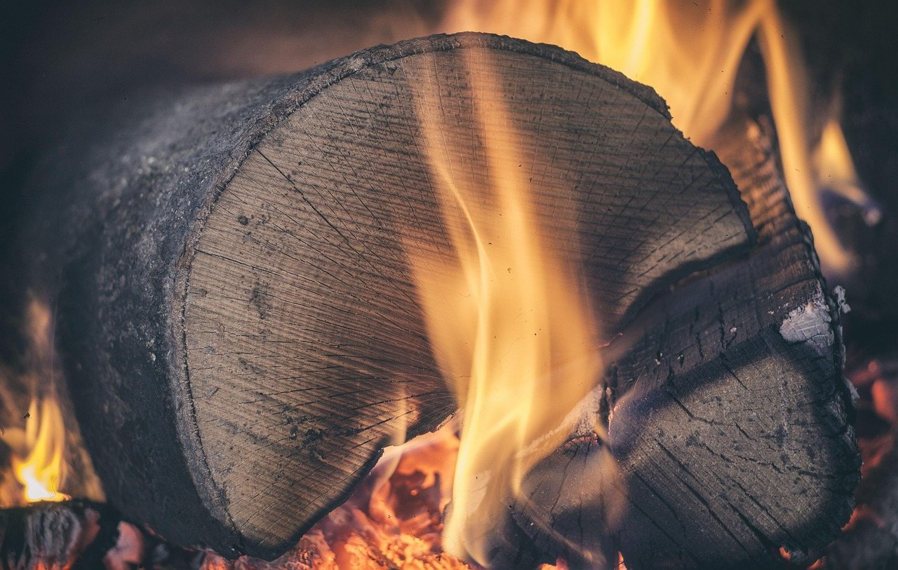
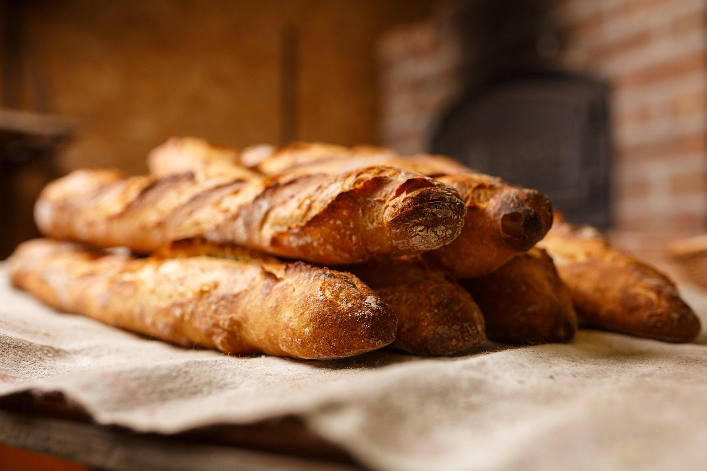

Wood-fired meals, Portland nights
Dinner starts with a fire.
We cook over live wood in Portland, and we're in no hurry. Pull up a seat. The coals are ready when you are.
See the menuThe fire
One way of cooking
-
Real heat
A wood fire has moods. We cook with them instead of around them, and you can taste the difference.
-
Char and smoke
Edges darken. Smoke settles in. That's the flavor, not a mistake.
-
One fire behind the menu
Our menu leans on a single wood fire, so the whole table shares a little of the same smoke.

Portland, ME
Cooked for the coast and the season
Portland nights turn cool for a good part of the year. That's when a fire earns its place at the table.
We cook food that feels right for the coast and the weather: warm and comforting, with something bright on the plate to keep it lively. When the air cools and the candles come out, the menu leans that way too.
On the fire this season
Four ways to cook-
Char
Straight over the hottest part of the fire, until the outside is dark and crackling.
-
Roast
Slower, with the heat all around, for food that needs time to go golden.
-
Smoke
Wood smoke does the seasoning that salt can't.
-
From the coals
What's left when the flames settle: glowing heat for the finishing touches.
What's on the fire changes with the season.
Read the full menuCome for a long dinner
Sit down. Stay for one more round.
We cook for a night that starts with a seat at the table and ends with one more round of conversation. Bring good company. Take your time.
Map and directions are on the find us page.